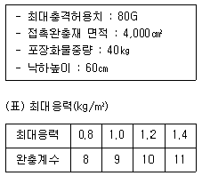
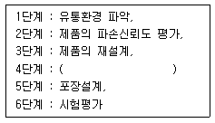
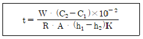
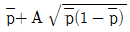
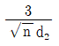
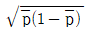

포장기사 (2004-05-23 기출문제)
1과목: 포장일반
1. 인쇄후 후가공으로 종이를 돌출시켜 입체감을 갖도록 하는 것은?
- 라미네이팅
- 전사
- 엠보싱
- 배면인쇄
(정답률: 알수없음)

2. 조합선택식 중량정량 계량기의 구조와 기능에 대한 설명 중 틀린 것은?
- 저장부 - 주트랩과 미량트랩
- 이송부 - 분산부와 풀 홉퍼
- 계량부 - 로드셀
- 배출부 - 슈트와 타이밍홉퍼
(정답률: 알수없음)
3. 세계적으로 통용되고 있는 국제표준화 규격은?
- ISO
- ASTM
- JIS
- DIN
(정답률: 알수없음)
4. L형 봉함식 수축포장기의 L자는 무엇을 표현한 것인가?
- 피 포장물
- 필름 가이드
- 수축 터널
- 열 봉함바
(정답률: 알수없음)
5. 포장디자인에 있어서 구조의 특이성을 부여한 것을 구조 디자인이라 하는데 색채 효과에 의한 디자인의 표현에 해당되는 것은?
- 구성디자인
- 색조디자인
- 의장디자인
- 판촉디자인
(정답률: 알수없음)
6. 국배판의 규격(mm)은?
- 74 × 1⑤
- 210 × 297
- 148 × 210
- 210 × 420
(정답률: 알수없음)
7. 낱포장의 가장 큰 역할은?
- 물품 개개의 보호성
- 완충성
- 마킹성
- 결속성
(정답률: 알수없음)
8. 매립의 경우 폐기물의 분해속도에 영향을 미치는 주된 인자와 가장 관계가 먼 것은?
- 수분
- 온도
- 통기성
- 압력
(정답률: 알수없음)
9. 제품을 리디자인(redesign)하는 경우가 아닌 것은?
- 패키지를 구조적으로 개선하는 경우
- 신제품을 개발하는 경우
- 유통중인 제품에 대하여 대내외적인 요청이 있을 때
- 제품의 내용량을 증감하는 경우
(정답률: 알수없음)
10. 국민보건상 필요하다고 인정되는 포장의 제조방법 및 원재료에 관한 법적규제 중 틀린 사항은?
- 공인기관의 검사를 거쳤더라도 제조자의 자체규격은 인정하지 않는다.
- 포장의 규격에 관하여 국가가 고시할 수 있다.
- 수출목적의 상품은 수입자가 요구하는 규격에 따를 수 있다.
- 기준과 규격에 부적합한 상품은 판매할 수 있다.
(정답률: 알수없음)
11. 병우유 충진방식에는 진공식충진과 중력식충진 방법이 있는데 이중 중력식충진법에 비교하여 진공식충진법이 좋은 점은?
- 충진량이 일정하다.
- 충진속도가 빠르다.
- 기계비가 비싸다.
- 조작이 용이하다.
(정답률: 알수없음)
12. 종이의 재활용시 일어나는 현상과 거리가 먼 것은?
- 섬유길이가 짧아지고 파열강도가 저하된다.
- 동일한 강도를 얻기 위해 평량이 높은 종이가 요구 된다.
- 골판지 상자는 수집이 어려워 재활용율이 낮다.
- 플라스틱, 접착제, 잉크 등이 재활용 방해물질이다.
(정답률: 알수없음)
13. 포장의 기능 중 판매촉진성을 위한 역할이 가장 많이 요구되는 것은?
- 재래시장
- 대형 슈퍼마켓
- 연쇄점
- 세일즈맨
(정답률: 알수없음)
14. 압축강도에 의한 강도표준화를 추진하면서 기본적인 필요 압축강도를 추정하고자 한다. 제품의 중량이 20kg 이고, 팰리트위에 5단 적재하고, 안전계수가 3 일경우 맨 하단에 받는 상자의 필요압축강도는 얼마인가?
- 240 Kg
- 280 Kg
- 300 Kg
- 360 Kg
(정답률: 알수없음)
15. 치수 표준화의 기본원칙과 가장 관계가 먼 것은?
- 내용물의 배열을 조정한다.
- 입수조정을 한다.
- 표준화가 어려울 경우에 낱포장의 치수를 무조건 변경한다.
- 속포장, 낱포장의 치수규격을 변경한다.
(정답률: 알수없음)
16. 인쇄시에 점 또는 선이 기하학적으로 가지런하게 분포된 것을 겹쳐 쌓았을 때에 생기는 현상은?
- 에칭
- 무(모)아레
- 톰슨
- 마졸리카
(정답률: 알수없음)
17. 플라스틱 병의 재활용 대한 다음 설명 중 틀린 것은?
- HDPE는 가구, 파이프, 우유 크레이트 등으로 재활용된다.
- PET는 음료수병 이외에 이축연신필름과 섬유에 사용된다.
- PVC는 PET, HDPE 제품보다 재활용이 더 쉽고 간단하다.
- 유리병으로 재활용되는 유리병과는 달리 플라스틱병은 다양한 재활용 제품으로 만들어 질 수 있다.
(정답률: 알수없음)
18. 포장디자인에 있어서 차별화 전략의 수단으로 이용되는 요소로서 가장 올바른 것은?
- 포장의 형상, 브렌드네임, 심볼 마크, 모델과 캐릭터
- 세일즈 아이디어와 노하우
- 소비자의 심리적 전략
- 상품 분화, 품질 표현기술
(정답률: 알수없음)
19. 어느 기업의 심벌마크를 문자로 하였을 때 가장 돋보이는 효과는?
- 다른 회사와의 혼동이 올 우려가 있음
- 회사이름을 줄여서 사용하므로 읽기 쉬움
- 정확하게 발음이 가능함
- 부드러운 인상을 줌
(정답률: 알수없음)
20. 다음의 포장재료 폐기물 중 열에너지 함량이 가장 높은 것은?
- PET
- PVC
- 종이
- PE
(정답률: 알수없음)
2과목: 물류관리
21. 마케팅 혹은 고객 지향적 사고의 특징으로 가장 관계가 먼 것은?
- 고객의 욕구를 이해하고 반응하는데 초점을 둔다.
- 모든 기업조직의 활동들을 고객의 욕구에 부응하도록 분리한다.
- 고객의 욕구를 충족시킴으로써 모든 목표를 달성할 수 있다는 점을 강조한다.
- 고객의 욕구에 부응하는데 있어 나타나는 사회적 결과에 관심을 가진다.
(정답률: 알수없음)
22. 물류빙산설이란 주로 무엇을 가리키는가?
- 사내에서 소비된 자가 물류비
- 사외에 지불된 위탁 물류비
- 사내, 사외에서 지불된 총물류비
- 독립적으로 계상하지 않는 물류비
(정답률: 알수없음)
23. 유통업자가 가공센터나 상점에서 상품코드를 붙이는 것은?
- in-store marking
- source marking
- EDI
- KAN
(정답률: 알수없음)
24. 항공운송이 운송수단의 중요한 역할을 담당하게 된 이유로서 가장 관계가 먼 것은?
- 고급품에 속하는 상품점유율의 증가
- 국제사회의 정보화 추세에 따른 세계경제의 긴밀화 및 유행에 민감한 상품의 신속한 유통
- 항공운송에 적합한 고부가가치 품목의 증가
- 국제간의 교류가 확대되면서 대량화물의 증가
(정답률: 알수없음)
25. 결품발생시 기업의 직접적인 손실은?
- 제품재고증가
- 판매기회손실
- 수송, 배송 효율저하
- 보관효율저하
(정답률: 알수없음)
26. 보관의 기본적인 요소로 틀린 것은?
- 창고내 입고와 출고를 용이하게 하고 창고내 원활한 화물의 흐름이 되도록 보관한다.
- 창고 전체의 유효보관이란 관점에서 최대한 높이 쌓는다.
- 출입구가 동일한 창고의 경우 입.출하 빈도가 높은 화물은 출입구에서 먼곳에 보관한다.
- 동일품목은 동일장소에 보관하고 유사품은 근처 가까운 장소에 보관한다.
(정답률: 알수없음)
27. 수송이 장소적 효용을 창조하기 위해서는 다음과 같은 사항들이 효율적으로 관리되어야 한다. 가장 거리가 먼 것은?
- 차량의 적재율
- 차량의 운반대수
- 운전기사의 자질
- 수송수단의 선택
(정답률: 알수없음)
28. 기존에 개발되어 있는 제품을 다른 용도로 재개발하여 새로운 시장에 뛰어들고자 한다. 이때 가장 적합한 성장 전략은?
- 시장 침투
- 제품 개발
- 시장 개발
- 다각화
(정답률: 알수없음)
29. 바코드의 정확도를 보장하는 컴퓨터 디지트는?
- 국가식별 코드
- 체크디지트
- 제조업체 코드
- 상품품목 코드
(정답률: 알수없음)
30. 국내 소화물 일관수송 서비스의 흐름을 가장 올바르게 나타낸 것은?
- 집하 → 간선운송 → 지선운송 → 간선운송 → 배달
- 배달 → 간선운송 → 지선운송 → 간선운송 → 집하
- 집하 → 지선운송 → 간선운송 → 지선운송 → 배달
- 배달 → 지선운송 → 간선운송 → 지선운송 → 집하
(정답률: 알수없음)
31. 팰리트 로딩(Pallet Loading)제도란?
- 팰리트 상태로 항공기에 탑재하는 방식
- 팰리트 상태로 트럭에 탑재하는 방식
- 팰리트 상태로 화차에 탑재하는 방식
- 팰리트 상태로 선박에 탑재하는 방식
(정답률: 알수없음)
32. 풀 팰리트에 대한 설명으로 가장 올바른 내용은?
- 여러 업계가 공동으로 결정하여 사용하는 팰리트
- 수송업계와 여러 업체가 수개 종류의 규격을 정하여 사용하는 팰리트
- ISO가 결정하는 팰리트
- 여러 업계와 각 수송기관에서 상호공동으로 사용하는 호환성 있는 팰리트
(정답률: 알수없음)
33. 마케팅 조직 중 기능별 조직에 해당하지 않는 것은?
- 부서 내의 의사소통이 원활한 편이다.
- 서로 다른 제품을 취급하는 기업에 적당하다.
- 구성원들이 유사한 작업을 수행하는 집단들로 분류된다.
- 조직 전체의 목적과 무관하게 자기 조직의 하부 목적 달성만을 추구한다.
(정답률: 알수없음)
34. 다음 중 군집분석의 수행절차로 가장 올바른 것은?
- 군집화 방법 선정 - 군집의 해석 - 변수의 선정 - 유사성 측정
- 군집의 해석 - 군집화 방법 선정 - 변수의 선정 - 유사성 측정
- 유사성 측정 - 변수의 선정 - 군집화 방법 선정 - 군집의 해석
- 변수의 선정 - 유사성 측정 - 군집화 방법 선정 - 군집의 해석
(정답률: 알수없음)
35. 국가 및 국제표준 바코드에는 표준형과 ( )두가지가 있다. ( )안에 내용으로 가장 올바른 것은?
- 단축형
- 함축형
- 입력형
- 절충형
(정답률: 알수없음)
36. 화물터미널 단지를 구성하는 개별시설로서 가장 적당한 것은?
- 일반화물터미널, 복합화물터미널, 컨테이너터미널
- 복합화물터미널, 집배송단지, 농산물물류센터
- 집배송단지, 농산물도매단지, 컨테이너기지
- 트럭터미널, 공항터미널, 해상터미널
(정답률: 알수없음)
37. 미국으로 TV를 골판지 상자로 포장하여 40ft 콘테이너에 넣은 후 수출하고져 한다. 이때 상자의 겉치수는 길이 × 너비 × 높이가 595 × 381 × 383(mm)이고, 콘테이너의 너비 × 높이는 8 × 8(ft)이며, 콘테이너 두께의 각면이 50mm일 때 콘테이너에 최대로 적재할 수 있는 상자수는? (단, 상자를 눕혀서는 안됨, 1ft는 304.8mm)
- 720개
- 558개
- 540개
- 410개
(정답률: 알수없음)
38. 창고의 종류중 입지기준에 의한 분류로 가장 올바른 것은?
- 연안창고, 내륙창고, 위험물창고
- 연안창고, 연선창고, 내륙창고
- 공장창고, 수면창고, 오지창고
- 내륙창고, 부두창고, 터미널창고
(정답률: 알수없음)
39. 랙((RACK)의 뜻을 가장 올바르게 설명한 것은?
- 앵글로 구축된 선반의 총칭
- 기둥과 선반으로 구성되는 산업용 물품 보관용구의 총칭
- 팰리트를 적재하기 위한 선반의 구축물
- 산업용 물품을 보관하기 위한 선반의 총칭
(정답률: 알수없음)
40. 영업창고의 장점과 가장 관계가 먼 것은?
- 창고 공간의 탄력성
- 완전한 관리체제
- 설비투자의 불필요
- 인력의 효과적 운영
(정답률: 알수없음)
3과목: 포장재료
41. 접착제로 도포한 기재를 봉함시 열을 가하지 않고, 단지 압력만을 가해서 접착하는 봉함방법은?
- 콜드씰(Cold Seal)
- 핫멜트씰
- Glue씰
- 감압(減壓)씰
(정답률: 알수없음)
42. 유리용기의 스트레인(strain)제거 목적으로 시행하는 과정은?
- 균질화
- 청장
- 서냉
- 프레스 성형
(정답률: 알수없음)
43. 얇은 저밀도 폴리에틸렌(LDPE) 필름의 포장용도 중 가장 적합한 것은?
- 냄새가 강한 조미료
- Retort 포장용
- 기름용 포장
- 농산물 pre-packaging용
(정답률: 알수없음)
44. 플라스틱 필름의 코팅에 의한 물성변화가 아닌 것은?
- 투명성 향상
- 인쇄면 보호
- 내수성 우수
- 가스차단성 우수
(정답률: 알수없음)
45. 목재용기 중 살상자란?
- 내부를 들여다 볼 수 있는 상자
- Staple로 조합된 상자
- 완전히 밀폐된 상자
- 방수 처리된 상자
(정답률: 알수없음)
46. 목재의 함수율에 대한 설명으로 가장 관계가 먼 것은?
- 함수율이란 목재 중에 함유되어 있는 수분의 무게와 수분을 제거한 목재질의 무게에 대한 비를 백분율로 나타낸 것이다.
- 목재의 함수율은 나무의 종류와는 관계없으나 계절의 변화에 민감하다.
- 전건(全乾)중량은 약 100-1⑤℃에서 건조시켜 목재의 무게가 변하지 않게 되었을 때의 무게를 말한다.
- 목재의 함수율은 결정수보다 자유수와 관계가 있다.
(정답률: 알수없음)
47. 기본적인 유리 착색제에 대한 설명 내용으로 가장 관계가 먼 것은?
- E.G.는 Emerald Green을 말하며 Chrome oxide가 첨가된다.
- Amber는 약호로 A라 칭하며 Iron과 Sulfur를 첨가한 유리병을 말한다.
- 청색유리는 Cobalt oxide를 소량 첨가한 것이다.
- Flint란 갈색을 띄며 자외선을 차단시켜주는 역할을 한다.
(정답률: 알수없음)
48. 크라프트 펄프를 지칭하는 BKP에서 B가 의미하는 것은?
- 표백
- 원료구성
- 용도
- 목재의 종류
(정답률: 알수없음)
49. 파리손을 수직축으로 연신시키는 방법으로 1.5ℓ 음료용 PET병 제조에 가장 널리 사용되는 성형방법은?
- 압출블로우 성형
- 사출블로우 성형
- 스트라이트 진공성형
- 스트레치블로우 성형
(정답률: 알수없음)
50. 골판지상자용 봉합재료가 아닌 것은?
- 접착제
- 접착테이프
- 그레이프 테이프지
- 스테플
(정답률: 알수없음)
51. 최근 레토르트 식품이 증대됨에 따라 내열성 포장재 사용량도 증가 되는데 레토르트 파우치 재료가 아닌 것은?
- PET/Al-foil/PP
- PET/Nylon/CPP
- PET/EVOH/PP
- PET/PVC/PP
(정답률: 알수없음)
52. 황산지라고도 하며 반투명한 얇은 종이로 무미, 무취이며 내유성, 내수성이 있어 버터, 치즈, 육류포장에 사용되는 종이는?
- 유산지
- 백상지
- 코트지
- 유선크라프트지
(정답률: 알수없음)
53. 산소 차단성의 효과가 가장 나쁜 필름은?
- OPP
- CPP
- PET
- Nylon
(정답률: 알수없음)
54. 알루미늄박의 가공에 대한 설명 중 잘못된 것은?
- 접합가공이란 강도를 보강하기 위한 가공이다.
- 수지가공이란 열봉함성, 내식성, 강도를 부여하는 가공이다.
- 엠보싱이란 압착으로 임의의 표시, 문자, 모양을 만들어 주는 가공이다.
- 인쇄적성이 좋아 금속박에 접착력이 없는 인쇄잉크를 사용해도 된다.
(정답률: 알수없음)
55. 다음 플라스틱 중 인쇄성이 가장 우수한 것은?
- LDPE
- HDPE
- CPP
- PET
(정답률: 알수없음)
56. 미국 Dow 케미칼사의 사란(Saran)이라는 상표로 유명하며 기체차단성이 특히 우수한 플라스틱의 명칭은?
- PVDC
- Ionomer
- Polyamide
- EVA
(정답률: 알수없음)
57. 소세이지의 단위 포장재로 사용되고 있는 폴리비닐리덴 크로라이드(PVDC) 필름의 특성이 아닌 것은?
- 열수축성
- 방수, 방습
- 내열성
- 통기성
(정답률: 알수없음)
58. 지기의 형태상 분류에 속하지 않는 것은?
- 윈도우 카톤
- 그라비어 카톤
- 셋업 박스
- Lock Bottom 카톤
(정답률: 알수없음)
59. 펄프 중에서 품질과 제품화용도, 특성등이 가장 좋은 순서대로 배열된 것은?
- 기계펄프 - 화학펄프 - 반화학펄프
- 기계펄프 - 반화학펄프 - 화학펄프
- 반화학펄프 - 화학펄프 - 기계펄프
- 화학펄프 - 반화학펄프 - 기계펄프
(정답률: 알수없음)
60. 포장용 완충재의 재질에 따른 분류 중 섬유구조물에 있어서 섬유소모에 해당되지 않는 것은?
- 나무솜
- 헤어록크
- 지모
- 팜로크
(정답률: 알수없음)
4과목: 포장기법
61. 골판지 상자의 소요 압축하중 계산시 적용하는 안전배율에 관계없는 항목은?
- 대기조건
- 진동
- 인쇄
- 골의 종류
(정답률: 알수없음)
62. 목상자의 하나인 틀상자에서 받침재(skid)의 역할이 아닌 것은?
- 로프로 달아 올릴 때 내용물의 하중을 받쳐준다.
- 포장 화물위에 다른 화물을 올려 놓았을 때 하중을 받쳐준다.
- 포크리프트로 들어 올릴 때 내용물의 하중을 받쳐 준다.
- 내용물에 들어 올리는 장치가 되어 하역될 때 내용물의 하중을 받쳐준다.
(정답률: 알수없음)
63. 기체환경조절포장에서 식품의 pH를 낮추어 약간의 향미 변화를 유발시키고 포장의 함몰을 가져 올 수 있는 가스는?
- 산소
- 프로필렌옥사이드
- 이산화탄소
- 질소
(정답률: 알수없음)
64. 레토르트 파우치 제조에 사용되는 라미네이트 방식은?
- Dry Lamination
- Coextrusion Lamination
- Wet Lamination
- Thermal Lamination
(정답률: 알수없음)
65. 분말식품에서 흡습이 많아지면 나타나는 현상이 아닌 것은?
- 갈변화 현상
- 분말 분자와 분자간의 이완현상
- 맛과 냄새의 변화
- Caking
(정답률: 알수없음)
66. 포장된 식품의 산패 현상이란 식품성분 중 어떤 물질의 변질을 말하는가?
- 단백질의 변패
- 탄수화물의 변패
- 색소의 갈변
- 지방의 변패
(정답률: 알수없음)
67. 양면골판지 상자에 있어서 이음부의 길이는 어느 정도로 부여하는 것이 가장 좋은가?
- 20mm
- 35mm
- 45mm
- 50mm
(정답률: 알수없음)
68. 식품의 갈변을 방지하는 포장방법과 가장 거리가 먼 것은?
- 진공포장 실시
- 브렌칭 실시
- 아황산 가스처리
- 산화효소 첨가
(정답률: 알수없음)
69. 다음과 같은 조건일 때의 소요완충재료의 두께는?

- 4 ㎝
- 6 ㎝
- 8 ㎝
- 10 ㎝
(정답률: 알수없음)
70. 방청 포장시 금속제품은 세척 조작을 충분히 하고 청정도 시험을 하도록 되어 있다. 다음 중 해당되지 않는 것은?
- 육안시험
- 압력시험
- 닦아내기 시험
- 용제시험
(정답률: 알수없음)
71. 전자레인지 식품에 대한 설명 중 가장 관계가 먼 내용은?
- 외부가열 방식으로 열전도와 대류현상에 의해 가열된다.
- 식품 용기의 크기와 형상에 따라 가열 조리 시간에 차이가 있다.
- 금속용기를 사용시 스파크가 일어날 수 있다.
- 식염농도와 기름성분의 유무에 따라 가열 조리시간에 차이가 있다.
(정답률: 알수없음)
72. 다음 중 완충포장의 목적과 가장 관계가 먼 것은?
- 제품에 생기는 응력을 집중시킨다.
- 제품끼리의 접촉을 방지한다.
- 용기내 제품의 이동을 방지한다.
- 완충 · 진동 등의 외력을 완화한다.
(정답률: 알수없음)
73. 미생물의 생육억제에 효과가 있는 가스는?
- 이산화탄소 + 산소
- 산소 + 질소
- 일산화탄소 + 질소
- 질소 + 이산화탄소
(정답률: 알수없음)
74. 완충포장설계시 기본 역학으로 적용하는 뉴톤(Newton)의 제 3법칙이란?
- 관성의 법칙
- F=ma
- v12 - v02 = 2gh
- 작용∙반작용의 법칙
(정답률: 알수없음)
75. 접착제 밀봉(Adhesives sealing 또는 Cold seal)을 채택하기 위한 검토사항과 가장 관계가 먼 것은?
- 제품의 생산량(대량, 소량생산 유무)
- 제품의 습기에 대한 민감성
- 개봉편리성
- 필름 생산업체의 제조기술
(정답률: 알수없음)
76. 유지식품의 포장재에 요구되는 특성 중 적합하지 않는 것은?
- 기체 배리어(barrier)성이 낮을 것
- 산소 차단성이 우수
- 광선 차단성이 우수
- 금속이온이 없을 것
(정답률: 알수없음)
77. 방습포장시 물품의 보관수명 (Shelf Life)을 측정하기 위해 조사할 때 필요한 사항이 아닌 것은?
- 허용한계 수분함량
- 포장재료의 투습도
- 포장물의 외기온도와 습도
- 포장재료의 밀도
(정답률: 알수없음)
78. PTP포장은 어떤 포장기법과 가장 가까운가?
- 브리스터 포장
- 스킨 포장
- 스트레치 포장
- 스트립 포장
(정답률: 알수없음)
79. 다음은 완충포장설계 6단계를 나타낸 것이다. ( )안에 들어갈 항목은?

- 완충재료의 선택과 성능 분석
- 제품의 적재단수 검토
- 완충재료의 최적 두께 결정
- 제품에 생기는 최대응력 결정
(정답률: 알수없음)
80. 다음 식은 무엇을 구할 때 쓰이는 공식인가?

- 흡습제의 양
- 방청제의 도포두께
- 셀프라이프
- 방습포장 재료의 양
(정답률: 알수없음)
5과목: 포장시험 및 평가
81. 내부인열강도 엘멘도르프시험기를 사용한 종이 및 판지의 인열강도시험 결과, 1회 인열매수가 2매 였고 눈금판의 수치가 40 이 나왔다면 1매의 인열강도는 몇 g인가?
- 80g
- 160g
- 240g
- 320g
(정답률: 알수없음)
82. 적정포장화물 시험방법의 적용범위에 대한 설명 내용으로 가장 관계가 먼 것은?
- 위험물은 제외한다.
- 육면체 용기 및 원통 용기에만 적용한다.
- 지름의 최대치수가 100cm를 넘는 포장화물은 제외한다.
- 모서리의 최대치수가 200cm를 넘는 포장화물은 제외한다.
(정답률: 알수없음)
83. 골판지의 시험방법이 아닌 것은?
- 평면압축강도시험
- 타공강도시험
- 파열강도시험
- 다트강도시험
(정답률: 알수없음)
84. 종이 및 판지의 파열강도시험에 있어서 시험기의 교정 시료로 사용되는 것은?
- 셀로판
- PE 필름
- 알루미늄박
- PP 필름
(정답률: 알수없음)
85. 양면 골판지(SW) 파열강도 측정시 시료의 조임 압력의 기준은?
- 6kg
- 8kg
- 10kg
- 12kg
(정답률: 알수없음)
86. 포장화물시험이 아닌 것은?
- 경사충격시험
- 진동시험
- 콘코라시험
- 낙하시험
(정답률: 알수없음)
87. 완충재료의 정적압축시험방법에서 세트성은 어느 정도의 변위가 생기도록 하중을 가하는가?
- 10 ± 2%
- 20 ± 2%
- 30 ± 2%
- 40 ± 2%
(정답률: 알수없음)
88. 종이나 판지를 좌우로 135 ± 5° 로서 매분 175회의 속도로 좌・우 양방으로 꺽여서 절단할 때 까지의 회수를 기록, 측정하는 시험방법은?
- 인열강도 시험
- 인장강도 시험
- 스티프니스(stiffness) 시험
- 내절도 시험
(정답률: 알수없음)
89. 종이의 특성상 방향성보다는 이면성을 좀 더 고려하여 시험하여야 하는 것은?
- 인장강도
- 인열강도
- 파열강도
- 링크러시강도
(정답률: 알수없음)
90. 포장화물 및 용기의 회전6각드럼시험에서 전락회수를 계산하는데 필요하지 않은 것은?
- 상자 최대변의 치수
- 상자 최소변의 치수
- 포장화물의 중량
- 드럼본체의 회전수
(정답률: 알수없음)
91. 다음 OC 곡선에 대한 설명중 틀리는 것은?
- 로트의 크기 N과 합격판정 갯수 C를 일정하게 하고 시료의 크기 n을 증가시키면 곡선의 기울기는 급해지고 생산자 위험이 증가한다.
- 어느정도의 부적합품(불량)률의 로트가 얼마정도의 비율로 합격될까 하는 것을 알 수 있다.
- 부적합품(불량)률이 커지면 로트가 합격될 확률은 적어진다.
- 로트의 크기 N과 시료의 크기 n을 일정하게 하고 합격판정 갯수 C를 증가시키면 OC 곡선은 경사가 급해진다.
(정답률: 알수없음)
92. 제조공정의 도중에서 특별히 검사공정을 장치하지 않고 검사원이 수시로 공정에서 흐르고 있는 제품을 검사하는 방법은?
- 공정검사
- 정위치 검사
- 순회검사
- 구입검사
(정답률: 알수없음)
93. 평 팰리트시험방법에 대한 설명이다.가장 관계가 먼 설명 내용은?
- 압축, 굽힘, 아랫면 바닥판 시험 그리고 낙하시험이 있다.
- 목제 팰리트의 시험시 함수율은 18%이상으로 한다.
- 플라스틱제 팰리트는 23±2℃에서 48시간 방치후 시험한다.
- 공시품의 수는 각시험 마다 5개 이상으로 한다.
(정답률: 알수없음)
94. 계수 샘플링 검사와 계량 샘플링 검사를 비교 설명한 것이다. 다음중 계량 샘플링 검사의 장점이 아닌 것은?
- 검사기록을 다른 목적에 이용하는 정도가 높다.
- 로트가 좋고 나쁜 것을 바르게 판단하는 능력을 얻는데는 시료의 크기가 작아도 된다.
- 시간, 설비, 인원을 요하는 것으로 검사비용이 많은 경우에 적용하면 유리하다.
- 이론상의 제약이 있어서 적용하는 조건이 일반적으로 쉽게 만족될 수 있다.
(정답률: 알수없음)
95. 발수도 시험방법에 대한 설명 내용으로 가장 관계가 먼 것은?
- 발수도 시험은 종이,판지, 플라스틱등에 적용한다.
- 발수도는 Ro로 부터 R10까지 8종류로 구분 표시한다.
- Ro는 발수가 가장 나쁘고 R10은 발수가 가장 좋다.
- 물방울은 1cm 높이에서 떨어지고, 시험편의 경사는 45° 이다.
(정답률: 알수없음)
96. 1로트가 10다스들이 50상자로 되어있을 때 50개를 샘플링 하는데 우선 상자를 5개 샘플링하고 그 5상자로부터 10개 씩 랜덤하게 샘플링하였다. 이러한 샘플링 방법에 적합한 것은 어느 것인가?
- 2단계샘플링
- 층별샘플링
- 취락샘플링
- 랜덤샘플링
(정답률: 알수없음)
97. 완충재료의 응력과 변위를 측정하는 시험은?
- 압축 크리프성 시험
- 셋트성 시험
- 정적 압축 시험
- 두께 측정 시험
(정답률: 알수없음)
98. p관리도에서 UCL은

라고 쓸 수 있다. A는 무엇인가?
- 3/√n

- Σ cK
(정답률: 알수없음)
99. 대형 지대의 바늘 땀 강도 시험방법에 대한 설명 중 가장 관계가 먼 내용은?
- 물림간격은 180 ± 10mm, 물림나비는 원칙적으로 50mm로 한다.
- 인장속도는 매분 20 ± 5mm로 설정한다.
- 시험편이 미끄러지거나, 물림부분이 절단된 경우도 측정치가 일정 이상의 값을 나타내면 참고치로 사용 한다.
- 시험편의 수는 10개 이상으로 하며 평균하여 측정치로 한다.
(정답률: 알수없음)
100. 로트의 형성에 있어서 원료별,기계별로 특징이 확실한 원인으로 로트를 구분하는 것은?
- 군구분
- 군별
- 해석
- 층별
(정답률: 알수없음)